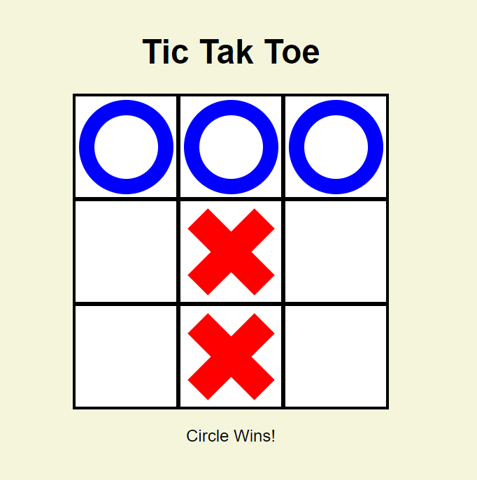

Tic-Tac-Toe Game
I followed a guide on Youtube and I particularly enjoyed learning the JavaScript side where we selected win conditions using arrays.
You can see the game here on GitHub
It might sound daft but I also discovered I can have an Index.html in any folder, this linked page doesnt have the html name at the end. I thought that was pretty cool.
